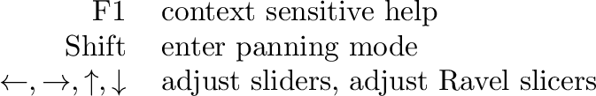
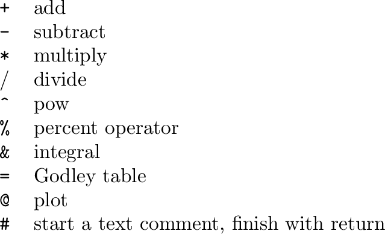

The canvas is not simply an inert place for the canvas items to exist. There is also a background context menu, giving access to the edit menu functionality such as cut/copy/paste, and also keyboard entry.
Special keys:

The following keystrokes insert an operation

Typing any other character, followed by the Return key, will insert an operation (if the name matches), or otherwise a variable with that name.